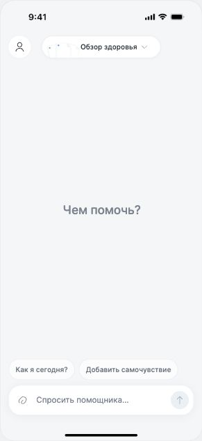
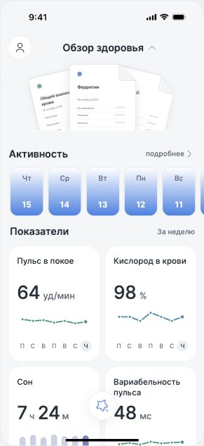
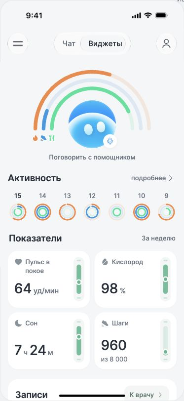
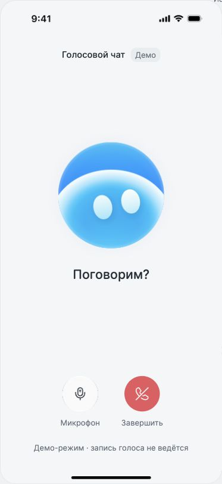
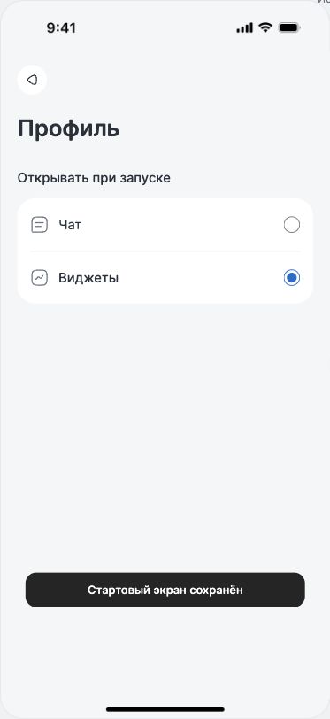

От раскрывающегося обзора
к «Чату / Виджетам»
Предыдущая версия сохранена целиком: исходники, ассеты, референсы и журнал. Коммит 5faca65, метка concept-collapsible-overview-2026-10-17.


Почему отказались от прежней схемы
- Неочевидный масштаб действия. Пилюля «Обзор здоровья» выглядит как раскрытие небольшого блока, но меняет весь экран и скрывает чат.
- У элементов меняется назначение. Поле ввода становится круглой кнопкой; заголовок, файлы и отступы перестраиваются. Нужно заново находить привычные действия.
- Много состояний для простой задачи. Свёрнутый обзор, раскрытый обзор, выбранный файл, деталка, чат и история создают несколько разных способов перемещения.
- Анимация усложняет ориентацию. Масштабирование веера, изменение размеров и переносы привлекают внимание к переходу. В итерациях потребовалось отдельно исправлять скорость, позицию профиля, зазоры и обрезку.
- Визуальные акценты конкурируют. Градиенты активности, веер документов, цветные метки и прежние объёмные иллюстрации оттягивают внимание от данных и текущей задачи.
- Слишком много новых жестов. Удержание и перенос ранее отклонены из-за конфликта со свайпами. В новой схеме основной переход доступен через явно подписанные вкладки; свайп вправо остаётся дополнительным входом в историю.
Новая схема
Постоянная шапка: меню из двух полосок слева, компактный сегмент «Чат / Виджеты» по центру, профиль справа. Название приложения, отдельный заголовок чата и плюс убраны. Короткое нажатие на меню и свайп вправо открывают историю; новый диалог создаётся внутри неё. Чат содержит переписку, вложения и поле ввода. Виджеты — самостоятельная прокручиваемая страница с активностью, показателями, обращением к врачу и документами.
В виджетах нижний инпут и кнопка AI отсутствуют. «Обсудить» открывает чат с выбранным контекстом. Черновик и переписка сохраняются при смене вкладки, позиция прокрутки виджетов восстанавливается.
Что сохраняем
Open Runde, равномерный сероватый фон, спокойные белые карточки метрик, читаемые единицы, историю активности, подробности показателя, прикрепление документов и свайп вправо к диалогам.
Две главные и голосовой помощник
Следующая итерация: в профиле можно выбрать старт с чата или с виджетов. Над разделами виджетов появился компактный полукруг из трёх дуг — активность, дистанция и питание — с тем же маскотом в центре.
Нажатие на маскота на обеих главных открывает голосовой разговор. Если в центре чата лежит новый анализ, открывается документ; после просмотра снова появляется маскот. Голосовой экран закрывается с возвратом на исходную страницу, сохраняя черновик и прокрутку. Микрофон и завершение доступны отдельными кнопками.



Материал элементов управления
По отдельному запросу автора сегмент использует Glass-HQ / Liquid Glass. Материал можно повторно применять к управляющим элементам; карточки данных остаются плоскими.
React и масштабирование стекла
Приложение перенесено на React: шапка, чат, виджеты, деталки и история — отдельные компоненты. Состояние диалогов, контекст и черновики хранятся в React в пределах текущей сессии.
Для Liquid Glass 0.0.2 добавлен локальный патч сборки. Экранные координаты переводятся в локальные координаты сцены; смещение при нажатии учитывает масштаб; изменение scale у родителя обновляет эффект. Масштабирование телефона восстановлено.
Проверены 60%, 80%, 100%, 125% и вложенный масштаб 80% × 80% в Chromium. Восемь автоматических проверок прошли. Вращение, perspective и остальные браузеры этой проверкой не покрыты. Стенд проверки масштаба.